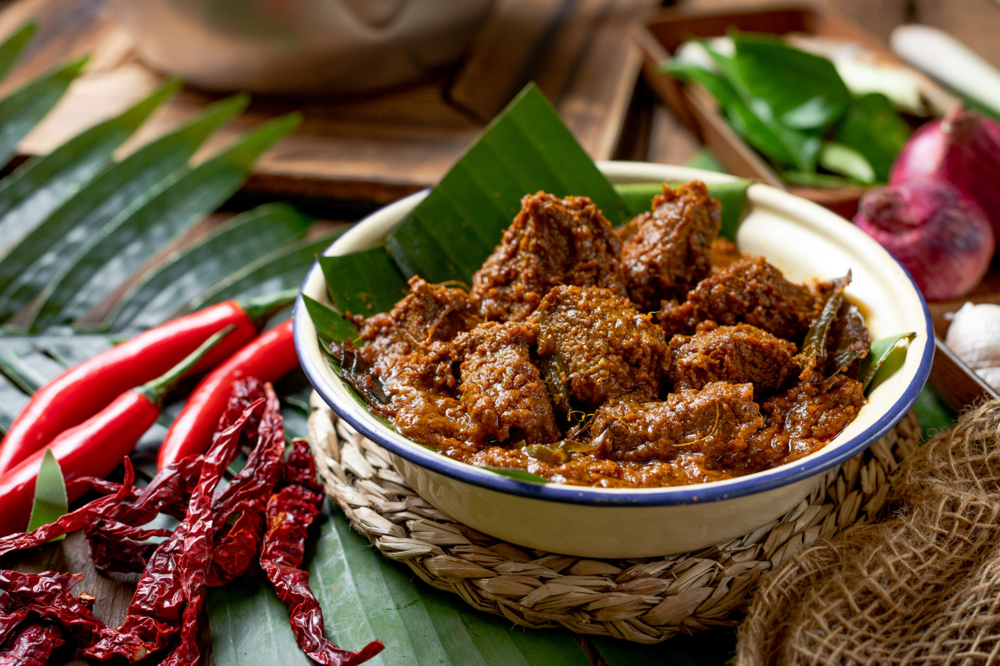

Mie Aceh

Mie Aceh adalah salah satu hidangan mie yang sangat populer di Indonesia, khususnya berasal dari Aceh. Mie ini dikenal dengan cita rasanya yang kaya rempah, pedas, dan gurih. Perpaduan bumbu-bumbu khas Aceh seperti ketumbar, merica, bawang merah, bawang putih, dan cabai memberikan cita rasa yang unik dan menggugah selera.
Keunikan cita rasa mie Aceh terletak pada racikan bumbu yang kaya akan rempah-rempah, sehingga menghasilkan rasa yang kuat di lidah. Mienya pun cukup unik karena berwarna kuning dan bentuknya tebal pipih. Mie Aceh memiliki beberapa varian, ada yang kering, nyemek, dan basah. Toppingnya pun beragam, ada telur, daging, udang, dan lainnya sesuai selera.
Kuah Pliek U

Kuah pliek adalah makanan khas Aceh yang mirip seperti gulai. Makanan ini berisi banyak campuran rempah-rempah,sayuran, dan bahan khusus yang disebut pliek u. Kuah pliek banyak dijadikan sebagai menu favorit pada saat acara-acara tertentu seperti hajatan.
Tidak jarang pula makanan khas satu ini dijadikan sebagai masakan rumahan yang dapat disantap sehari-hari. Selain rasanya yang kaya akan rempah-rempah, pliek juga memiliki beberapa manfaat. Dikutip dari Prosiding Seminar Nasional Biotik yang berjudul "Isolasi dan Identifikasi Jamur pada Proses Pembuatan Pliek U" karya Rinaldi dkk, minyak pliek u memiliki khasiat menyembuhkan sakit kepala, mengobati luka,
Ayam Tangkap

Ayam tangkap khas Aceh ini biasa disebut juga dengan nama ayam tsunami karena tampilannya yang tampak porak-poranda selaksa daratan yang baru saja diterjang tsunami dahsyat. Masakan ini sebenarnya berupa ayam goreng berbumbu yang dimasak bersama daun rempah seperti daun kari, daun pandan, daun jeruk dan daun kunyit. Keunikan hidangan ini adalah dedauan rempah tersebut turut juga digoreng bersama ayam sehingga teksturnya berubah garing dan renyah.
Ketika disajikan potongan ayam goreng ditata dipiring dan disiram gorengan dedaunan rempah tersebut. Ayam tangkap ternyata baru populer di kalangan masyarakat Aceh sekitar 6 hingga 8 tahun belakangan. Dinamakan ayam tangkap karena ayam yang dipilih merupakan ayam kampung yang dipelihara bebas dikebun dan pekarangan (free range) sehingga perlu ditangkap terlebih dahulu sebelum bisa dimasak.
2. Sumatera Barat
-
Rendang
-

Rendang adalah hidangan tradisional Indonesia yang terkenal dengan cita rasa kaya dan proses memasak yang lambat. Terbuat dari daging, biasanya daging sapi, yang dimasak dengan santan dan campuran rempah-rempah khas seperti cabai, lengkuas, serai, jahe, bawang putih, bawang merah, dan kunyit. Proses memasak rendang berlangsung berjam-jam hingga bumbu meresap sempurna dan cairan santan mengering, menciptakan tekstur daging yang lembut dengan lapisan bumbu kental.
Rendang memiliki rasa yang gurih, pedas, dan sedikit manis, serta dikenal karena kekayaan rempah-rempahnya. Hidangan ini bukan hanya sekadar makanan, tetapi juga bagian dari budaya, sering disajikan pada acara-acara penting dan perayaan adat di Sumatera Barat. Popularitasnya telah menyebar ke berbagai belahan dunia, bahkan diakui sebagai salah satu makanan terlezat secara global.
-
Dendeng Balado
-

Dendeng balado adalah hidangan khas Minangkabau, Sumatera Barat, yang terbuat dari irisan tipis daging sapi yang digoreng kering, kemudian disajikan dengan sambal balado. Sambal balado sendiri adalah bumbu pedas yang dibuat dari cabai merah, bawang merah, bawang putih, dan sedikit jeruk nipis, yang memberikan rasa pedas, asam, dan segar.
Daging dendeng dalam dendeng balado biasanya digoreng hingga kering dan renyah, namun tetap memiliki rasa gurih. Kombinasi daging yang renyah dan sambal balado yang pedas membuat hidangan ini sangat digemari, terutama oleh pecinta makanan pedas. Dendeng balado sering disajikan sebagai lauk utama, biasanya bersama nasi putih hangat, dan menjadi salah satu hidangan yang ikonik dalam masakan Padang.
-
Sate Padang
-

Sate Padang adalah hidangan sate khas dari daerah Padang, Sumatera Barat, yang terbuat dari potongan daging sapi, ayam, atau lidah yang dibumbui dan ditusuk pada tusukan bambu, kemudian dibakar di atas arang. Yang membedakan Sate Padang dari sate lainnya adalah kuahnya yang kental dan berwarna kuning atau cokelat kemerahan, yang terbuat dari campuran kaldu daging, tepung beras, dan berbagai rempah seperti kunyit, jahe, lengkuas, ketumbar, dan cabai.
Sate Padang memiliki rasa yang gurih dan sedikit pedas, dengan aroma rempah yang kuat. Biasanya disajikan dengan ketupat atau lontong, serta taburan bawang goreng di atasnya untuk menambah tekstur dan rasa. Kuah kental yang melimpah memberikan cita rasa khas yang membuat Sate Padang sangat digemari di seluruh Indonesia.
-
Pempek
-

Pempek adalah makanan khas Palembang, Sumatera Selatan, yang terbuat dari daging ikan giling dan tepung sagu atau kanji. Pempek memiliki ciri-ciri sebagai berikut: Tekstur kenyal dan padat, namun lembut saat dimakan.
Disajikan dengan kuah cuko, yaitu saus asam pedas berwarna hitam kecokelatan. Diberikan pelengkap seperti mie kuning, potongan timun, ebi, dan lain-lain. Memiliki berbagai variasi, seperti pempek kapal selam, pempek lenjer, pempek adaan, dan pempek kulit. Pempek merupakan hidangan legendaris yang sudah ada sejak abad ke-16, tepatnya pada masa Kesultanan Palembang Darussalam. Pada masa itu, pempek dikenal dengan nama kelesan. Nama pempek berasal dari panggilan "Pek, empek" yang diberikan pembeli kepada penjual kelesan.
-
Tekwan
-
Tekwan adalah hidangan khas Palembang, Sumatera Selatan, yang terbuat dari olahan ikan dan sagu, mirip dengan pempek. Tekwan memiliki bentuk bulatan kecil yang kenyal dari campuran ikan dan sagu, kemudian disajikan dalam kuah kaldu udang yang gurih. Ciri khas tekwan adalah kuahnya yang bening, segar, dan kaya akan cita rasa laut karena menggunakan udang sebagai bahan utama kaldu.
Selain bola-bola ikan, tekwan juga dilengkapi dengan pelengkap seperti soun (bihun), jamur kuping, irisan bengkuang, dan ditaburi daun seledri serta bawang goreng untuk memberikan aroma dan tekstur tambahan. Rasanya yang ringan, gurih, dan sedikit manis sangat cocok disantap sebagai makanan sehari-hari atau sajian istimewa di acara-acara tertentu.
Tekwan biasanya disantap hangat dan bisa disajikan dengan tambahan sambal untuk cita rasa yang lebih pedas sesuai selera.
-
Bika Ambon
-

Bika ambon adalah kue tradisional khas Medan, Sumatera Utara yang memiliki ciri-ciri sebagai berikut: Warna kuning, permukaannya seperti pori-pori kulit manusia, bagian bawahnya keras, teksturnya lembut dan berongga-rongga. Aromanya khas karena menggunakan santan kelapa dan daun pandan. Rasanya legit dan kenyal Bika ambon terbuat dari bahan-bahan seperti tepung tapioka, telur, gula, dan santan.
Kue ini dimasak selama 12 jam agar dapat bertahan selama 3-4 hari. Bika ambon sering disajikan di berbagai acara, seperti arisan, pesta syukuran, hingga kumpul keluarga saat Idul Fitri. Kue ini juga menjadi oleh-oleh favorit bagi wisatawan yang berkunjung ke Medan.
-
Arsik
-
Ikan arsik merupakan masakan khas Batak yang memiliki cita rasa yang sangat unik. Cita rasanya ini berasal dari campuran rempah-rempah yang banyak terdapat di Sumatera Utara yakni andaliman dan kecombrang.
Biasanya sajian ikan arsik ini banyak dihidangkan saat perayaan hari besar seperti natal atau acara pernikahan. Walaupun demikian, ikan arsik tetap boleh dimasak dan disantap kapanpun seperti untuk menghidangkan kepada para tamu atau untuk lauk makan siang.